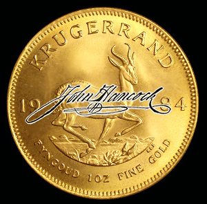

Trubanc is an anonymous, digitally-signed vault and trading system. Like Loom, it allows anyone to issue assets (digital currencies). Unlike Loom, which relies entirely on (very good) obscurity for security, Trubanc's digital signatures allow the bank and the customer to prove to each other that they agreed at a particular time on their balances. It does this while allowing destruction of transaction history for closed trades. Trubanc will initially provide server-based trading. Eventually, it will provide digital checks and bearer certificates. These, however, WILL require permanent storage of transaction history.
You may view unfinished code in progress here.
git clone git://repo.or.cz/Trubanc.git trubanc
Copyright © Bill St. Clair, 2008. All rights reserved.